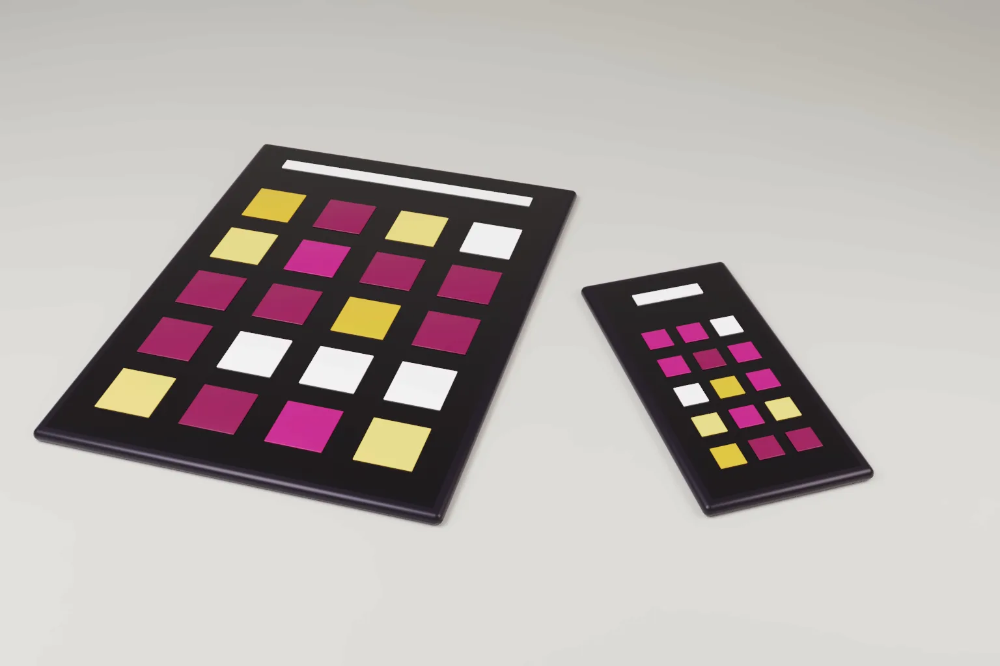

GUI design registration in India now has a written process. The Controller General of Patents, Designs and Trade Marks has issued draft guidelines on graphical user interfaces and icons. Comments are open for 30 days from publication.
For years the Designs Office treated screen designs inconsistently. Some GUI designs were registered. Many others were refused as not applied to an article. The draft sets out how the Office now intends to examine them.
What the Calcutta High Court decided
On 9 March 2026 Justice Ravi Krishan Kapur of the Calcutta High Court decided a batch of five design appeals together. The appellants included NEC Corporation, ERBE Elektromedizin, Abiomed and TVS Motor Company. Each had a GUI design application refused by the Controller.
The court held that there is no per se exclusion for GUIs under section 2(d) of the Designs Act, 2000. It rejected the Controller's view that GUIs need express statutory protection. It noted that the Office had already registered some GUI designs, which showed inconsistent practice. It said each GUI application must be decided case by case. It urged the legislature or the Controller to give clearer guidance. It set aside the refusals and sent the cases back for fresh hearing.
The court read "article" and "industrial process" broadly. It held that a design need not be permanently visible. It is enough that the design is visible in normal use. It also said that Locarno classification is only indicative and cannot decide registrability by itself.
- The draft guidelines accept GUIs and icons as registrable designs when they are applied to an article.
- A GUI or icon shown on its own, with no article, will be refused.
- Electronic display of a GUI counts as application by an industrial process.
- Animated or transitional GUIs are allowed, but each frame must be filed as a separate design.
- The draft is directory. The Designs Act and Rules prevail over it.
- From 2 October 2026 design examination reports are sent by email to the address for service.
What the draft guidelines say
The draft treats a GUI or icon as registrable only when it is applied to an article. Examples include a mobile phone, tablet, monitor, wearable or other device with a display. A standalone GUI or icon is not registrable because it is not an "article" under section 2(a).
The draft deals with three points that used to block applications. A GUI must be visible during normal use. It does not matter that it appears only when the device is switched on. Electronic generation and display of the GUI is enough to meet the industrial process requirement.
Classification and titles
Where the novelty lies only in the interface, the draft uses class 14-04, screen displays and icons. This applies even if the article sits in another class. Where the novelty lies in the article, the article's own class applies. Where both are new, the applicant may file separate applications.
Titles such as "GUI", "Icon" or "Graphic Symbol" on their own are not allowed. The title should name the article, for example "Mobile phone with GUI" or "Smart watch with GUI". The draft gives a table of sample titles and classes.
Drawings, novelty statement and disclaimers
Representations must follow Rule 14 of the Designs Rules, 2001. They must show the GUI applied to the article. The device outline can be shown in broken lines, and those parts then form no part of the design. A front or perspective view will usually be enough.
A statement of novelty is required. Disclaimers may cover broken lines, functionality, numbers, letters, symbols and trade marks. Purely functional features are not protected. The definition of design in section 2(d) still excludes trade marks and artistic works under the Copyright Act, 1957.
Animated and changing interfaces
Static GUIs are admissible. Dynamic, animated, sequential and transitional GUIs are also admissible. The catch is practical. Each frame must be filed as a separate design. A simple animation may therefore need several applications, each with its own fee and examination.
Examiners will also search class 14-04 when a GUI is disclosed, whatever article class the applicant chose. Applicants should expect prior screen designs to be cited more often.
What the draft does not decide
The draft is not law. It states that it does not implement any amendment to the Designs Act. If it conflicts with the Act or Rules, the statute prevails. It does not address fonts or computer programs as separate categories. It also does not settle how infringement of a registered GUI will be judged in court.
The frame by frame rule is the point most likely to draw comment. It differs from the EU approach, discussed below, and adds cost for animated designs.
A related change: examination reports by email
A separate public notice changes how design objections reach applicants. From 2 October 2026 First Examination Reports in design applications are ordinarily sent only by email. They go to the email address given under "Address for Service in India" in Form-1. Postal dispatch stops unless the Controller records reasons for sending a copy by post.
Applicants must keep that address valid and monitored. Foreign applicants should confirm that their Indian agent's docketing captures these emails.
How India compares with the US, the EU and the UK
- United States. Design patents protect designs for an article of manufacture under 35 U.S.C. section 171. On 13 March 2026 the USPTO issued supplemental guidance on computer generated interfaces and icons. A display screen no longer has to be shown in the drawings. Titles such as "icon for display panel" now identify an article. Projected, virtual reality and augmented reality interfaces can qualify if they are for a computer or computer system.
- European Union. Regulation (EU) 2024/2822 amended the EU design rules. A "product" now covers items in physical form or in a form that is not physical, and expressly includes graphical user interfaces. A "design" now includes movement, transition and animation. The EU therefore does not tie a GUI to a physical device, unlike the Indian draft.
- United Kingdom. Under the Registered Designs Act 1949 a "product" includes graphic symbols. Computer programs are excluded. A GUI or icon can itself be the product. The Act does not require a physical device.
India therefore sits closer to the older US position than to the EU. The device must still appear in the title and drawings. Our guide to EU trade mark and design practice in 2026 covers the EU reform in more detail.
Practical steps for applicants
- Name the article in the title and show it, in broken lines if only the interface is claimed.
- Choose class 14-04 where the novelty is in the screen design alone.
- File each key frame of an animated interface as its own design, and budget for the extra applications.
- Draft a clear statement of novelty and add disclaimers for text, numbers and logos.
- Do not publish a new interface before filing. Under section 4 of the Designs Act, a design disclosed anywhere before the filing or priority date cannot be registered.
- Keep the Form-1 email address for service active and docket every email from the Designs Office.
- Consider sending comments on the draft before the 30 day window closes.
Our design registration services cover filing and prosecution in India and abroad. For how designs sit alongside patents, copyright and trade marks, see our guide to the types of intellectual property protection.
Frequently asked questions
Can a GUI be registered as a design in India?
Yes, when it is applied to an article such as a phone, tablet or display device. The Calcutta High Court confirmed this in March 2026. The draft guidelines set out how to file.
Can an icon be registered on its own in India?
Not under the draft guidelines. An icon shown without any article will be refused. Show it on a device and name the device in the title.
How are animated GUIs protected in India?
The draft accepts animated and transitional GUIs. Each frame must be filed as a separate design.
Official source
- IP India public notice, Draft Guidelines for Registration of Designs Relating to GUI and Icon
- Draft Guidelines for Registration of Designs relating to GUI and Icon under the Designs Act, 2000
- IP India notice on communication of design FERs only through electronic mode
- USPTO supplemental guidance on computer generated interfaces and icons, 13 March 2026
- Regulation (EU) 2024/2822 amending the Community design regulation
- Registered Designs Act 1949 (UK), section 1